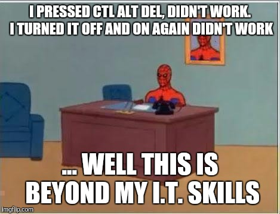
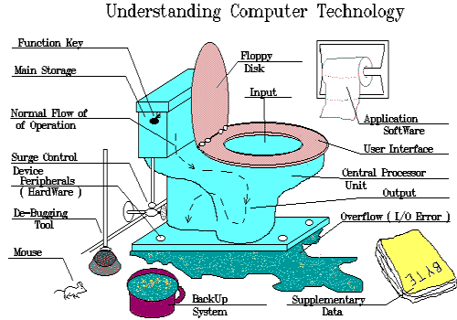

This unit focuses on basic computer and information science skills. Students identify hardware components, research ergonomic considerations, practice file management skills, access resources through local and wide area networks, and research the evolution of programming languages. They develop skills for success in the computer and information science environment. Students focus on the Computer and Information Science environment; students also examine respect for the environment and wise use of resources from a responsible perspective.
Overall, this unit was basically an introduction, but it's the first unit, so what else should you expect, right? I learned loads about HTML, as you can probably see looking around this website. We also did some CSS stuff, which is great for making pretty websites like mine.
 
 This page was last updated on 04/09/97 at 14:20
This page was last updated on 04/09/97 at 14:20